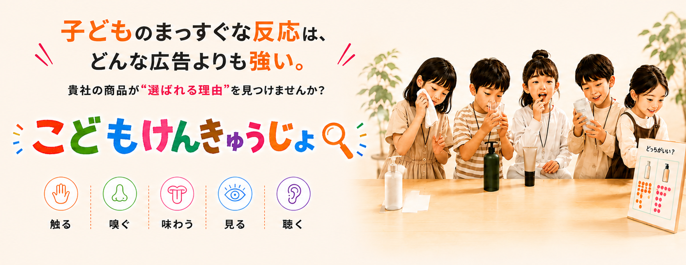

選ばれる理由が見つかる
子どもの率直な反応から、商品の魅力や改善点を発見。

ABOUT
くらべて、さわって、たしかめる。
子どもが「研究員」になって、企業の商品を五感で体験・検証する参加型のマーケティング企画です。見る・触る・嗅ぐ・味わう・聴くといった体験を通して、子どもたちの率直な表情や行動、感じたことを引き出します。
大人へのアンケートだけでは見つけにくい商品の魅力や改善のヒントを、子どものまっすぐな反応から発見。体験で得られた気づきを、商品開発や販促、営業、SNSなど次のマーケティング活動へつなげます。
MERIT
子どものリアルな体験を、次のビジネスアクションにつなげます。
子どもの率直な反応から、商品の魅力や改善点を発見。
商品開発・販促・営業・SNSなど、次の施策につながるヒントに。
商品を実際に体験してもらい、認知だけではないリアルな関係づくりへ。
ABOUT US
「こどもけんきゅうじょ」を運営する一般社団法人 日本マタニティフード協会は、妊娠・出産・育児期の家族が、安心して選べる食品・サービスとの出会いを支える協会です。企業とファミリーの間に立ち、認定・売り場・コミュニティ・体験機会を通じて、継続的な接点づくりを行っています。
食品・ベビーフード・日用品など、幅広い企業を支援。
マタニティフード認定を通じ、安心して選べる商品を可視化。
Tokyo Family Marcheを有明・府中で展開。
ハッピーマタニティBOXに、約1年間で1万人の妊婦さんから応募。
CASE STUDY
先行開催｜府中フォーリス
2026年8月、府中フォーリスで「こどもけんきゅうじょ」を先行開催しました。子どもたちが10商品を見て、試食し、気に入った商品に投票。商品ごとの反応や、年齢による好みの違いを確かめました。
先行開催で分かったこと
幼児から特に人気を集めた商品、大人から多く選ばれた商品など、商品によって異なる傾向が見られました。普段の売上データだけでは分かりにくい「どの年代に、どの商品が選ばれるのか」を知ることで、商品の伝え方や届けたい相手を考えるヒントが得られました。
先行開催で分かったことを活かし、次回は約4万人が来場する東京ビッグサイトのイベントで開催します。
INSIGHT
イベントで見られた子どもの表情や行動、投票結果、生の言葉を記録します。商品開発や販促、営業資料、PRなどに活用できます。
商品を見た瞬間から、体験・投票するまでの子どもの表情や行動を記録。SNSやEC、営業資料などに活用できます。
投票結果を年齢別にまとめ、どの年代に選ばれたかを分かりやすく整理します。届けたい相手や商品の伝え方を考える材料になります。
「おすすめPOP」などを通じて、子ども自身の言葉を集めます。商品の新しい魅力や、販促コピーを考えるヒントになります。
※提供内容は実施企画・プランにより異なります。
EVENT
東京ビッグサイト開催｜約4万人が来場予定
今回は、朝日新聞社が主催する「GOOD LIFE フェア2026」の会場内に、「こどもけんきゅうじょ」の特設エリアを設けます。イベントの中で独自の企画を展開する「フェアinフェア」として開催し、約4万人の来場が見込まれる会場で、多くの親子に企業の商品を体験してもらいます。
GOOD LIFE フェア2026
GOOD LIFE フェア2026の会場内に、独自の特設エリアを設けて開催
必要な企業向けの有料オプション＋50,000円（税抜）
詳しい分析レポート＋サポート面談（オンライン）FLOW
お申し込み後に商品や実施内容を確認し、イベント当日を迎えます。開催後は、ワークショップの様子や子どもたちの反応をまとめたイベントレポートを無料でお届けします。
CONTACT
参加を決めている方は参加申込フォームへ。企画内容や自社商品との相性を確認したい方は、まずはお気軽にご相談ください。
協賛企業募集締切：2026年8月31日